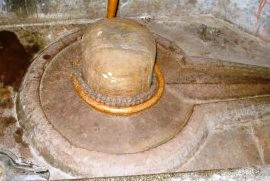

<?xml version="1.0" encoding="UTF-8"?><rss version="2.0"
	xmlns:content="http://purl.org/rss/1.0/modules/content/"
	xmlns:wfw="http://wellformedweb.org/CommentAPI/"
	xmlns:dc="http://purl.org/dc/elements/1.1/"
	xmlns:atom="http://www.w3.org/2005/Atom"
	xmlns:sy="http://purl.org/rss/1.0/modules/syndication/"
	xmlns:slash="http://purl.org/rss/1.0/modules/slash/"
	>

<channel>
	<title>Trisandhyeshwar &#8211; Varanasi Temples</title>
	<atom:link href="index.html" rel="self" type="application/rss+xml" />
	<link>../../../../../index.html</link>
	<description>Temples of Varanasi as referred to in Kashi Khand</description>
	<lastBuildDate>Thu, 19 Jun 2025 05:16:46 +0000</lastBuildDate>
	<language>en-US</language>
	<sy:updatePeriod>hourly</sy:updatePeriod>
	<sy:updateFrequency>1</sy:updateFrequency>
	<generator>https://wordpress.org/?v=4.6.29</generator>
	<item>
		<title>TRISANDHYESHWAR</title>
		<link>../../../../../shiva-temples/trisandhyeshwar/index.html</link>
		<pubDate>Tue, 11 May 2010 07:09:57 +0000</pubDate>
		<dc:creator><![CDATA[admin]]></dc:creator>
				<category><![CDATA[Other Shiva Temples (S-Y)]]></category>
		<category><![CDATA[Shiva Temples]]></category>
		<category><![CDATA[Trisandhyeshwar]]></category>
		<category><![CDATA[dasaswamedh]]></category>
		<category><![CDATA[trisandhyeshwar]]></category>

		<guid isPermaLink="false">../../../../../p=482.html</guid>
		<description><![CDATA[Lord Vishnu was describing various religiously important places, teerths etc. to Sage Bindu (Kashi Khand, Chapter 61). Devotees should bathe in Trisandhi Teerth and perform Sandhya Vandan. Those people who have undergone  Sacred Thread Ceremony (Upanayanam) have to perform Sandhya Vandan three times a day viz. in the morning, noon and evening.  The afternoon ritual [&#8230;]]]></description>
				<content:encoded><![CDATA[<p>Lord Vishnu was describing various religiously important places, teerths etc. to Sage Bindu (Kashi Khand, Chapter 61).</p>
<p>Devotees should bathe in Trisandhi Teerth and perform Sandhya Vandan. Those people who have undergone  Sacred Thread Ceremony (Upanayanam) have to perform Sandhya Vandan three times a day viz. in the morning, noon and evening.  The afternoon ritual is called Madhyannikam.</p>
<p></p>
<p style="text-align: center;"><strong>(TRISANDHYESHWAR)</strong></p>
<p>A devotee who takes bath in Trisandhi Teerth and performs Trisandhya (the above rituals) without fail and worships Trisandhyeshwar, will derive the benefits accruing out of learning three Vedas.</p>
<p>Though Kashi Khand has mentioned this very briefly, it needs to be elaborated.  Rig Veda, Yajur Veda, Sama Veda and Atharva Veda are four Vedas.  The three Vedas mentioned here may mean any three of the four Vedas or the first three Vedas.  Learning even one Veda is a huge and herculean  task and there may be only a handful of people in the world in the present day who may be gifted with this knowledge.  Therefore, learning three Vedas is indeed a great thing.</p>
<p>One more thing needs to be mentioned here.  In performing Sandhya Vandan, the devotee has to perform about 15-20 pranayams (inhaling, exhaling and retention of breath), prayer to Lord Surya by offering Arghya, recitation of Gayatri Mantra and some amount of physical activities by prostrating before the Lord. If the above ritual is performed three times  a day, the physical activity involved is thrice.  If a person does this regularly with devotion, even scientifically looking at it, he will remain healthy.</p>
<p>Trisandhi Teerth is dried up and devotees may take bath in river  Ganga nearby.</p>
<p><strong><span style="text-decoration: underline;">LOCATION OF TRISANDHYESHWAR</span></strong></p>
<p>Trisandhyeshwar is located at Ck.34/10, Lahouri Tola, Phoote Ganesh. Presently, this Shiv Ling is inside the extended Kashi Vishwanath Corridor, towards the river Ganga.  If a person approaches the Vishwanath temple from Lalitha Ghat, after he has climbed the initial steps, this ling will come somewhere on the left side.</p>
<p><strong><span style="text-decoration: underline;">TYPES OF POOJA</span></strong></p>
<p>The place is open from morning to night and devotees can perform pooja on their own.  Wherever regular poojari is available, the details have been given.  Devotees are advised to carry some Ganga water and Bilva Patra and they can perform the Abhishek and offer Bilva Patras to Lord Shiva in his form of Shiv Ling and we are sure the Lord will be pleased to bless his devotees.</p>
]]></content:encoded>
			</item>
	</channel>
</rss>
